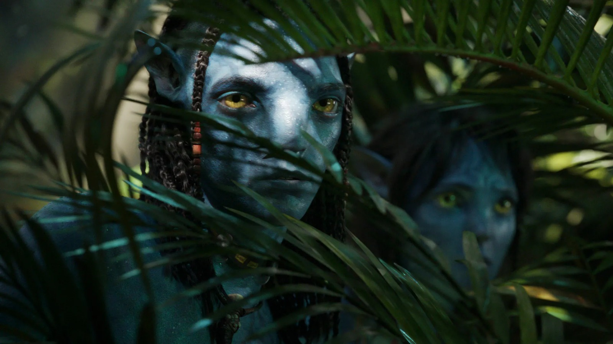

INTRODUZIONE:
L'universo di Avatar, creato da James Cameron, non è solo una serie di film di successo, ma anche
un'esperienza immersiva che spazia attraverso videogiochi e progetti multimediali. Dai sorprendenti dettagli
di Pandora, ispirati alla natura terrestre, alle tecnologie innovative utilizzate per creare i film, fino
all'open-world mozzafiato del videogioco Avatar: Frontiers of Pandora, ogni aspetto di questo franchise è un
omaggio alla creatività, alla tecnologia e all'amore per l'ambiente.
In questa scheda, esploreremo curiosità affascinanti che arricchiscono l'esperienza dei film e del
videogioco, rivelando dettagli nascosti, processi di creazione e messaggi tematici profondi che rendono
Avatar una saga unica nel suo genere. Che tu sia un fan della cinematografia rivoluzionaria o un
appassionato di giochi d'avventura, Pandora ti offrirà sempre nuovi mondi da scoprire.
Film di Avatar
-
L'ispirazione per Pandora: James Cameron ha tratto ispirazione per il mondo di Pandora dalla foresta
pluviale amazzonica, dalle barriere coralline e da paesaggi naturali unici della Terra. La flora e
la fauna sono una combinazione di immaginazione e biologia terrestre.
- Tecnologie all'avanguardia: Cameron ha sviluppato tecnologie innovative per girare le scene
sott'acqua nel sequel Avatar: La via dell'acqua, permettendo agli attori di recitare in ambienti
sommersi senza l'uso di bombole di ossigeno.
- Messaggio ambientale: Entrambi i film pongono un forte accento sulla conservazione ambientale,
evidenziando i danni causati dall'avidità umana e l'importanza di rispettare la natura e le culture
indigene.
-
Anni di sviluppo: Il primo Avatar ha richiesto più di un decennio di lavoro, non solo per il design
visivo ma anche per sviluppare il linguaggio e la cultura dei Na'vi.
Videogioco Avatar: Frontiers of Pandora:
- Ambientazione unica: Il gioco si svolge nelle frontiere occidentali di Pandora, un'area mai vista
nei film. Presenta paesaggi mozzafiato, come foreste pluviali, montagne fluttuanti e vasti biomi
ricchi di fauna e flora viventi.
- Open-world dettagliato: Si tratta di un mondo aperto dove i giocatori possono esplorare, combattere
e interagire con tribù Na'vi e creature. È possibile cavalcare Ikran (banshee) e altri animali,
rendendo l'esplorazione dinamica.
- Crafting e sopravvivenza: Il gioco include meccaniche di crafting, come creare armi e cibo, e
richiede ai giocatori di nutrirsi e raccogliere risorse. Questo lo rende immersivo, sottolineando il
legame tra i Na'vi e la natura.
- Combattimento vario: I giocatori possono usare armi tradizionali dei Na'vi, come archi e lance,
oppure armi umane, tra cui fucili e granate. I combattimenti includono strategie come sfruttare i
punti deboli dei mech nemici.
- Messaggio ecologico: Come nei film, il gioco sottolinea la necessità di proteggere l'ambiente,
invitando i giocatori a ripulire Pandora dalle strutture umane che danneggiano il suo ecosistema.
Il gioco è stato descritto come una fusione tra il gameplay della serie Far Cry e l'estetica unica
di Pandora, offrendo un'esperienza di circa 20 ore per la trama principale, che può essere estesa
con missioni secondarie e esplorazioni opzionali.